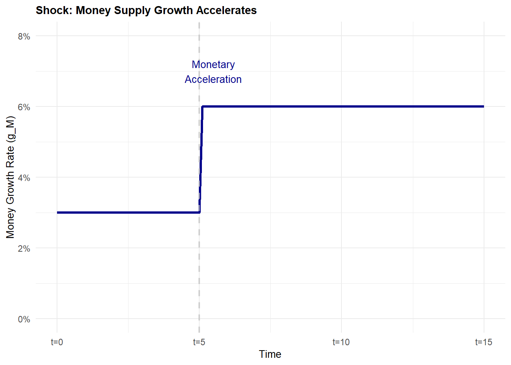

library(ggplot2)Warning: package 'ggplot2' was built under R version 4.4.3# Time periods
time <- c(0, 5, 5.1, 15)
g_M <- c(3, 3, 6, 6)
df_gM <- data.frame(time = time, g_M = g_M)
ggplot(df_gM, aes(x = time, y = g_M)) +
geom_line(color = "darkblue", linewidth = 1.2) +
geom_vline(xintercept = 5, linetype = "dashed", color = "gray", linewidth = 0.8, alpha = 0.7) +
annotate("text", x = 5.5, y = 7, label = "Monetary\nAcceleration", size = 3.5, color = "darkblue") +
scale_y_continuous(limits = c(0, 8), breaks = seq(0, 8, 2), labels = function(x) paste0(x, "%")) +
scale_x_continuous(breaks = seq(0, 15, 5), labels = c("t=0", "t=5", "t=10", "t=15")) +
labs(x = "Time", y = "Money Growth Rate (g_M)",
title = "Shock: Money Supply Growth Accelerates") +
theme_minimal() +
theme(plot.title = element_text(face = "bold", size = 11),
axis.title = element_text(size = 10))
